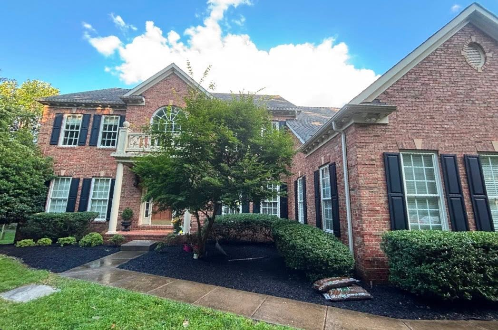
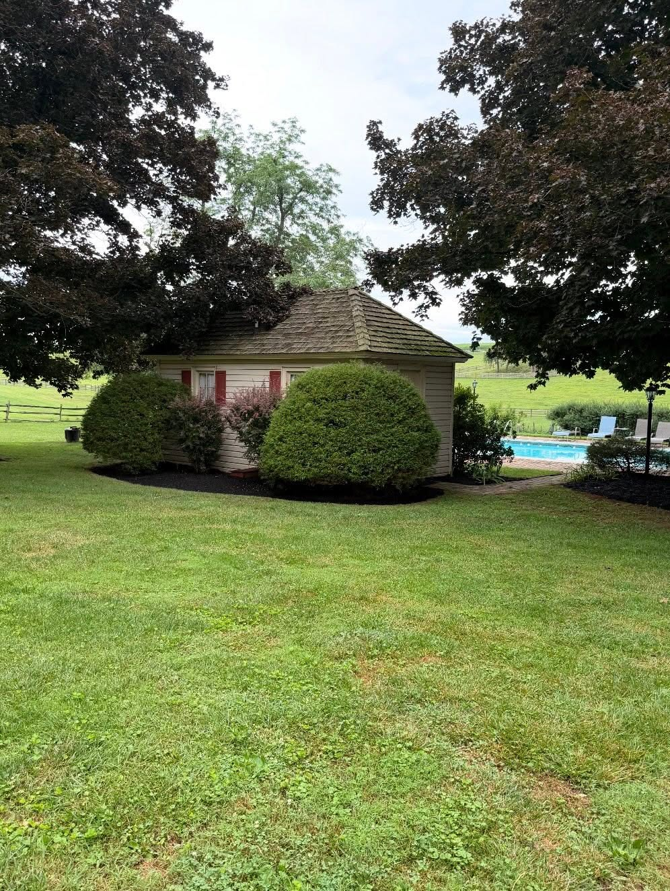
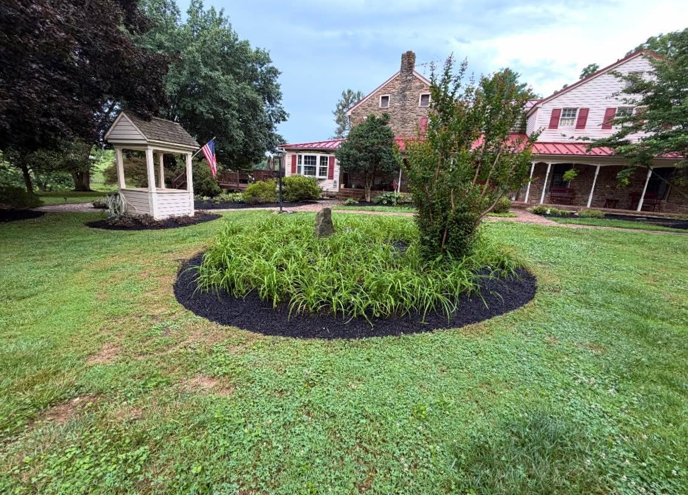
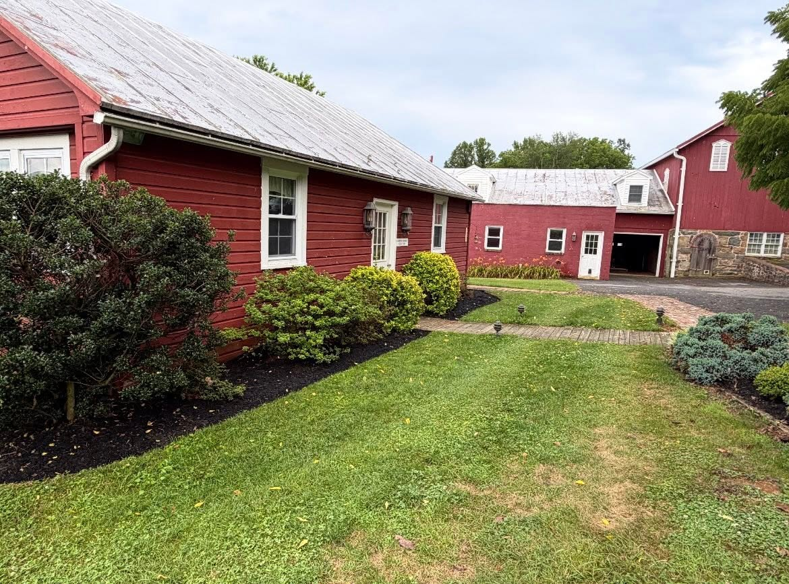

Lawn care
Mowing and yard maintenance to keep your outdoor space looking cared for.
Talk lawn careFreshly cut grass. Neatly kept beds.
A little more room to enjoy your outdoors.

01 / OUR SERVICES
From a freshly cut lawn to the details around it. Tell Dylan what your property needs.
Mowing and yard maintenance to keep your outdoor space looking cared for.
Talk lawn careMulching, bed maintenance, and bush and tree trimming. The details that bring a yard together.
Talk landscapingSnow and ice clearing when winter changes what your property needs. Ask about availability.
Talk winter care02 / AROUND THE YARD



Project photos from Dylan’s Lawn Care on Facebook.
03 / WORDS FROM CUSTOMERS
From 82 Google reviews
“Dylan and crew were excellent”
“Reliable, hardworking, and a pleasure to work with”
“They came out and did a great job”
Selected five-star reviews. Overall rating and review count checked September 9, 2026.
04 / GOOD TO KNOW
Call 410-365-1265 to discuss your property and the work you need. You can also open Dylan’s Facebook profile and use its Message option. Facebook may ask you to sign in.
Dylan’s Facebook profile lists Reisterstown, Maryland. Get in touch to confirm whether your specific address is covered.
Yes. Explore more work on Facebook, or read customer feedback on Google Maps.
LET’S GET STARTED
Have a lawn or landscape project in mind? Talk with Dylan about your property and a free estimate.
Call 410-365-1265 Find Dylan on FacebookROOTED IN REISTERSTOWN, MD
Have your town and the work you need in mind. A few photos of your property can help start the conversation.
Call Dylan to confirm coverage for your address and discuss current availability.